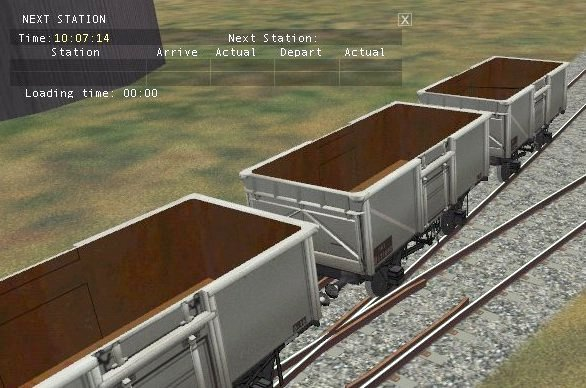
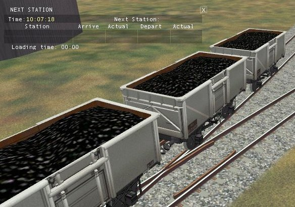

Constructing Wagons With Hideable Loads
by Ian McMillan
Overview
Imagine this activity:
- You pick up some empty wagons and take them to the Colliery;
- You uncouple them under the screens and run round;
- You re-attach the now loaded wagons and take them to the power station tippler;
- Then you draw out the emptied wagons ready for their next trip.
Can't be done?
Yes it can, thanks to MSTS-Bin.
Look at the time in the "Next Station" display.....

.........Press Ctrl + Numpad 7.........

.....and the wagon is loaded.
I used the door animation to rotate the load so that the polys faced inside the wagon making them invisible. You can do this with any load that will fit inside the wagon when inverted.
I have not tried it yet but this trick should also work with containers and similar simple shapes by making the sides, end and top as seperate parts and rotating them on their appropriate axis.
The only snag is that the wagon mass cannot be changed and the wag file will have to show the loaded weight.